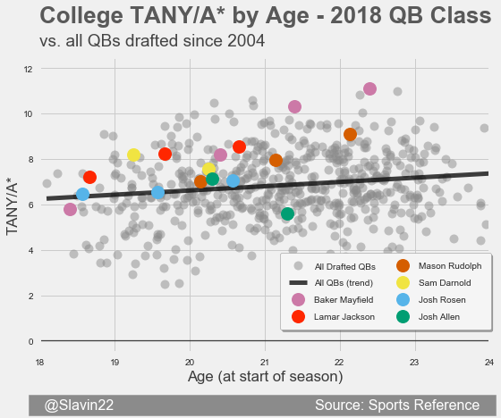
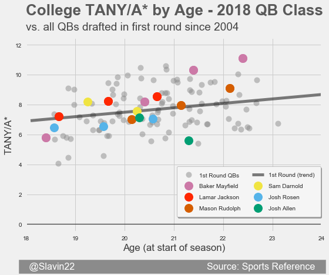
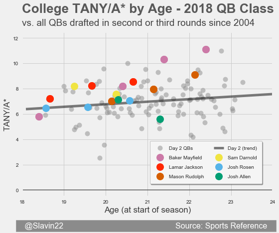
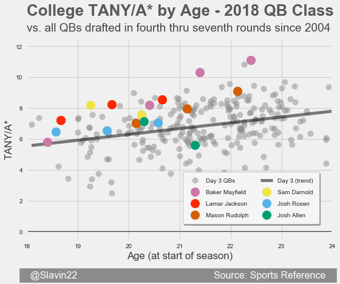

2018 QB Draft Guide
Home
Methodology
Random QB
Statistical Profiles for 2018 QB Class
Sam Darnold
Baker Mayfield
Lamar Jackson
Josh Rosen
Josh Allen
Mason Rudolph
Kyle Lauletta
Logan Woodside
Mike White
Riley Ferguson
Tanner Lee
Luke Falk
Chase Litton
Kurt Benkert
J.T. Barrett
Nic Shimonek
Quinton Flowers
Danny Etling
John Wolford
Nick Stevens
Jeremiah Briscoe
Kyle Allen
Austin Allen
Dalton Sturm
Brandon Silvers
Alex McGough
Kenny Hill
Richard Lagow
Anu Solomon
Matt Linehan
TANY/A* by Age compared to: All QBs drafted | First Round QBs | Day 2 QBs | Day 3 QBs




Created by
Sean Slavin
of
TwoQBs
, all stats courtesy of
Sports Reference
.